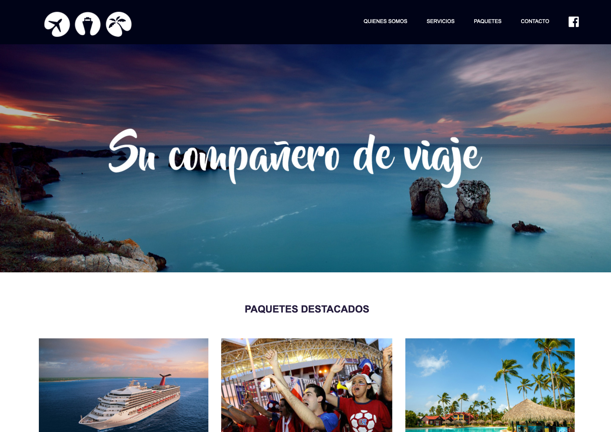
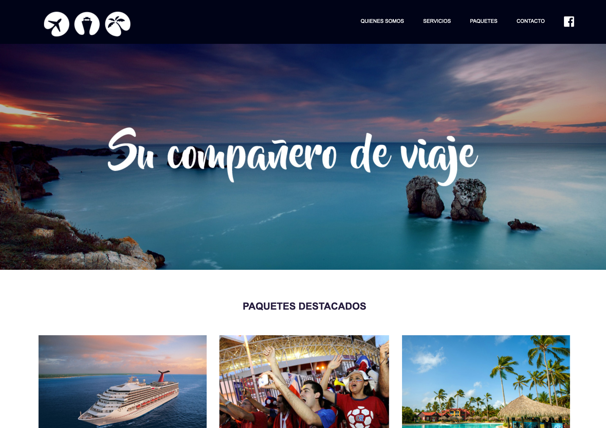

James Solis
Hola, me llamo James Solis. Estudiante de diseño y desarrollo web, futuro Front-End Developer y UI Designer. Tengo 19 años y me defino como un joven con ganas de emprender, con ganas de llevar mi creatividad al máximo. Me encantan los desafíos ya que los veo como una oportunidad de apredizaje y sacar lo mejor de mi. Amo el diseño, el arte y la naturaleza.
Baja si quieres ver mas informacion acerca de mi
Un poco sobre los proyectos
Los projectos que se compartiran a continuación son una recopilación de todos los que he realizado a lo largo de la carrera, el proceso ha sido sumamente enriquecedor y me gustó ponerlos en catigorías distintas por el hecho de que se puede diferenciar bien el avance y el progreso de los mismos.
Proyectos más relevantes
Los proyectos seleccionados se destacan como los mas relevantes por la calidad y el proceso que se llevo realizarlos.
 


Proyecto más relevante
Este es el Proyecto más relevante para mi por el hecho de que fue donde pude aprender bastante y acercarme más a todo este mundo del desarrollo web, ver temas de accesibilidad y tomar eso en cuenta en el.
Ver mas